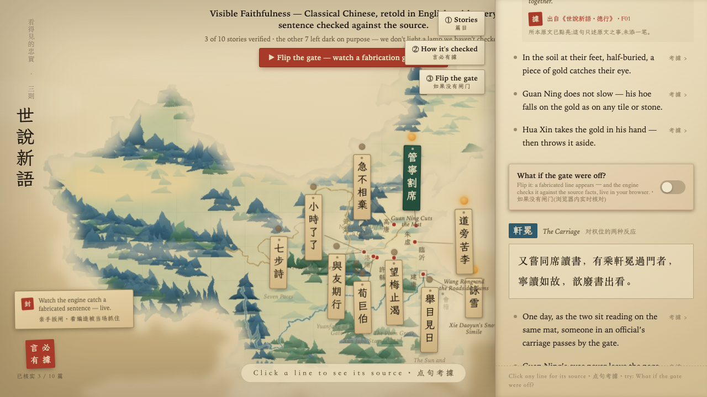
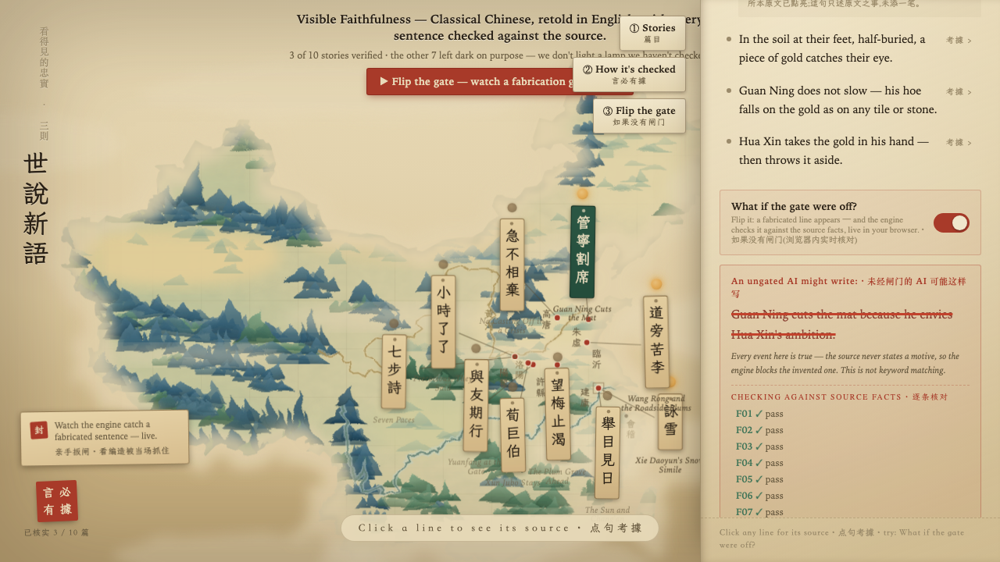

造 CASE PAGE
An agent that adapts Classical Chinese stories into English — with a deterministic faithfulness check that compares every output against locked sources and blocks anything invented. Built as a Kaggle "Agents for Good" capstone.
The three-minute competition video: what it does, and the moment the gate catches a planted hallucination.
Adaptation wants creative freedom; classical sources demand accuracy. Instead of asking one model to balance both, the system splits the jobs: an adapter writes freely, a decoder explains the cultural context, and a deterministic checker compares every claim against the locked source text. If a detail isn't in the source, the export is blocked — no judgment call, no vibes.


HOW IT WAS BUILT